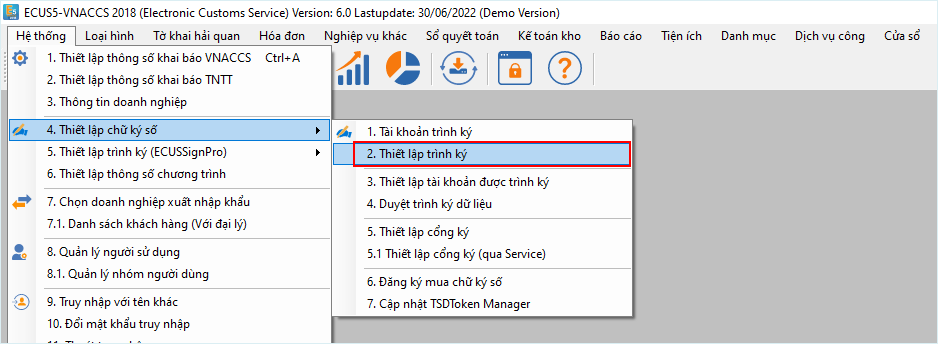
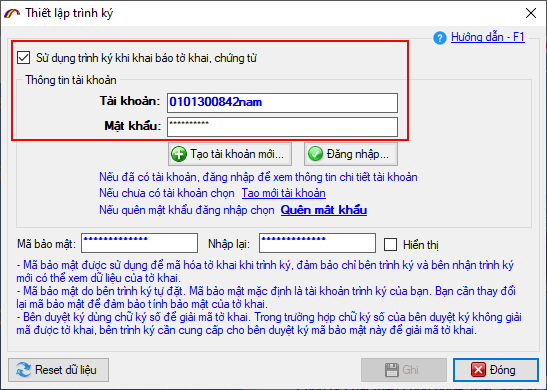
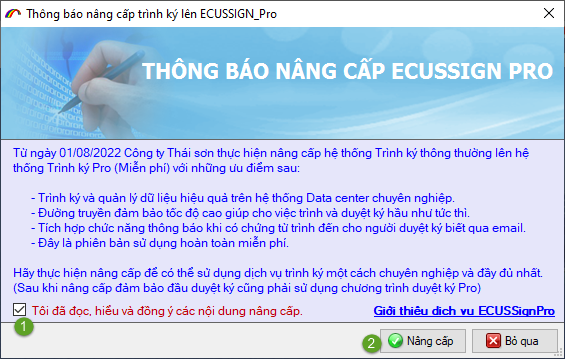
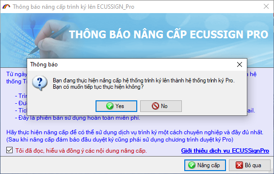
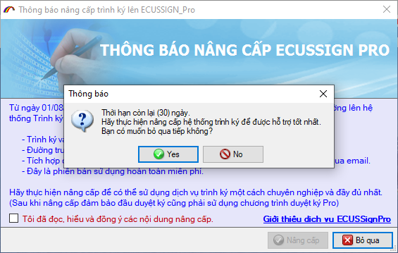
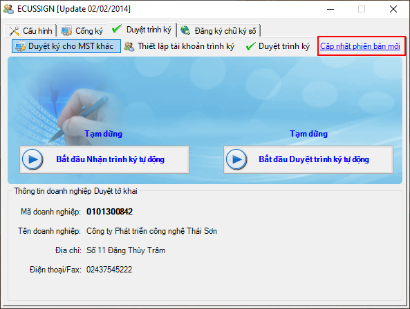
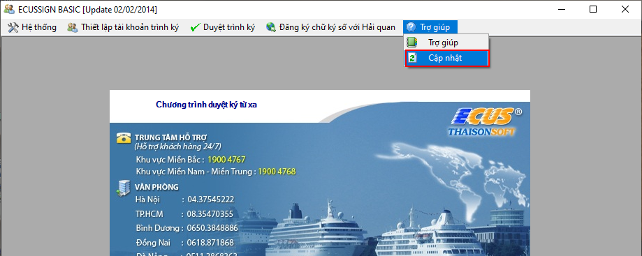
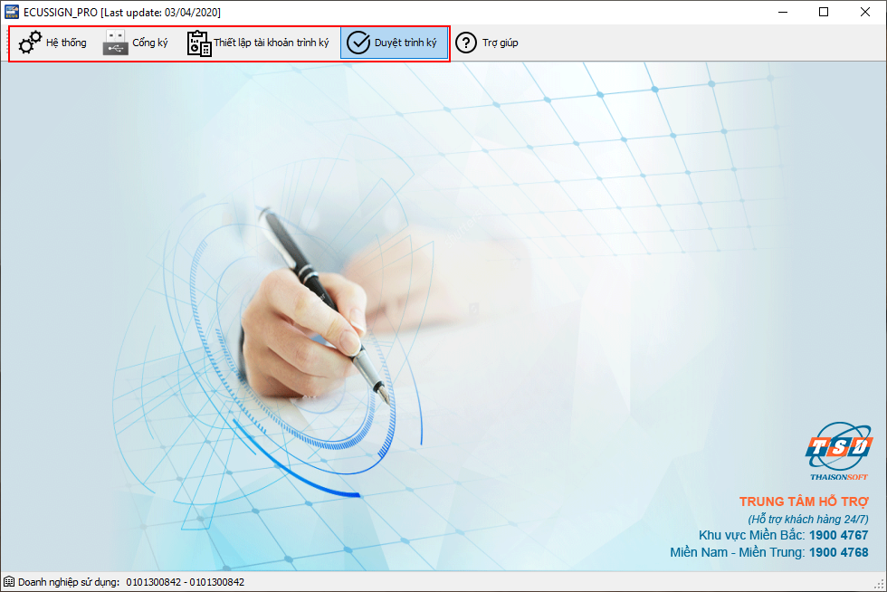

HƯỚNG DẪN NÂNG CẤP TRÌNH KÝ ECUSSIGN_PRO
Từ 01/08/2022-31/08/2022 Thái sơn sẽ thực hiện chuyển đổi các tài khoản trình ký thông thường lên hệ thống trình ký Pro (hoàn toàn miễn phí), nhằm đảm bảo nâng cao chất lượng dịch vụ. Để thuận tiện cho doanh nghiệp tiếp tục sử dụng dịch vụ trình ký, chúng tôi xin hướng dẫn quá trình nâng cấp lên hệ thống trình ký ECUSSIGN PRO như sau.
- ĐỐI VỚI BÊN TRÌNH KÝ
Bên trình ký là các doanh nghiệp, đại lý sử dụng phần mềm ECUS5VNACCS để khai báo tờ khai, chứng từ nhưng không quản lý trực tiếp thiết bị chữ ký số.
Nếu doanh nghiệp đang thiết lập sử dụng trình ký thường (không phải trình ký qua ECUSSignPro) tại menu Hệ thống / 4. Thiết lập chữ ký số/ 2.Thiết lập trình ký:


Khi nâng cấp lên phiên bản ECUS5VNACCS mới nhất ngày 26/07/2022 lúc khởi động chương trình, phần mềm sẽ hiện ra thông báo như sau:

a) Nếu doanh nghiệp đồng ý nâng cấp: Doanh nghiệp đánh dấu tích chọn vào mục Tôi đã đọc, hiểu và đồng ý các nội dung nâng cấp sau đó nhấn nút Nâng cấp. Hệ thống sẽ hiện thông báo để bạn xác nhận lần cuối trước khi thực hiện:

Các lợi ích khi doanh nghiệp thực hiện nâng cấp lên hệ thống trình ký ECUSSignPro:
- Tài khoản trình ký thường của doanh nghiệp sẽ được nâng cấp tự động lên tài khoản trình ký Pro và hoàn toàn miễn phí.
- Doanh nghiệp trình và nhận kết quả ký trên hệ thống trình ký ECUSSignPro chuyên nghiệp với đường truyền tốc độ cao, giúp cho việc trình và nhận kết quả gần như tức thì
- Doanh nghiệp không phải đăng ký lại tài khoản trình ký mới, vẫn tiếp tục sử dụng với tài khoản trước đây (thông tin tài khoản vẫn giữ nguyên tên đăng nhập và mật khẩu) .
b) Nếu doanh nghiệp chưa thực hiện nâng cấp: Doanh nghiệp nhấn nút Bỏ qua để đóng thông báo này để tiếp tục sử dụng tài khoản trình ký thường và các menu cũ của chương trình.

Các lưu ý quan trọng khi doanh nghiệp chưa thực hiện nâng cấp lên hệ thống trình ký ECUSSignPro:
c) Một số lưu ý:
- 1. Khi nâng cấp từ tài khoản trình ký thường lên trình ký Pro, doanh nghiệp phải thông báo lại cho bên duyệt ký cùng nâng cấp phần duyệt ký lên phiên bản ECUSSIGN_PRO thì mới có thể lấy được chứng từ trình lên.
- 2. Đối với các doanh nghiệp không sử dụng trình ký hoặc đang sử dụng tài khoản trình ký ECUSSignPro, khi nâng cấp phần mềm lên phiên bản 26/07/2022 sẽ không có thông báo này
- ĐỐI VỚI BÊN DUYỆT KÝ
Bên duyệt ký là người quản lý thiết bị chữ ký số, sử dụng phần mềm ECUSSign, ECUSSignBasic hoặc ECUSSignPro để duyệt ký chứng từ, tờ khai được trình đến.
Kể từ ngày 01/08/2022, công ty Thái Sơn sẽ nâng cấp tất cả các phiên bản duyệt ký về một bản duy nhất - ECUSSIGN_PRO nhắm nâng cao chất lượng dịch vụ và mang lại cho khách hàng trải nghiệm tốt nhất.
Để thực hiện nâng cấp phần mềm duyệt lên bản ECUSSIGN PRO, doanh nghiệp phải thực hiện thủ công bằng cách nhấn vào mục cập nhật tương ứng như sau:
Doanh nghiệp có thể vào link Cập nhật phiên bản mới trên giao diện ECUSSign:

Hoặc vào menu Trợ giúp / Cập nhật đối với phần mềm ECUSSignBasic:

Giao diện chính của phần mềm ECUSSIGN Pro mới như sau:

Phần mềm ECUSSignPro phiên bản mới sẽ tích hợp cả chức năng Cổng ký, Trình ký. Giao diện và cách sử dụng vẫn như cũ nên doanh nghiệp hoàn toàn không mất thời gian làm quen.
Lưu ý, khi nâng cấp lên phiên bản ECUSSignPro, bạn sẽ không thể lấy thông tin chứng từ, tờ khai được trình lên từ các tài khoản trình ký thường. Do đó bạn cần thông báo để phía trình ký nâng cấp cho đồng bộ.
Bản quyền © thuộc về Công ty TNHH Phát triển công nghệ Thái Sơn